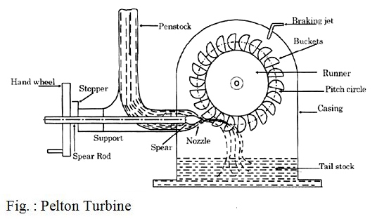
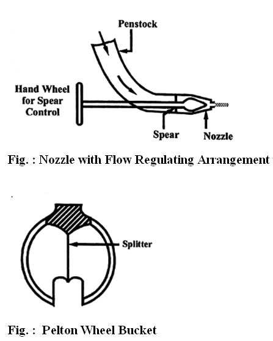

Q. 15 Explain the working of pelton turbine.
Pelton turbine किस तरह से काम करता है समझाइये।
Ans. Fig.: shows the layout of a Pelton turbine in which the water from the reservoir flows through the penstock at the outlet of which a nozzle is fitted. The nozzle increases the kinetic energy of the water flowing through the penstock. At the outlet of the nozzle, the water comes out in the form of a jet and strikes the buckets (vanes) of the runner. The jet of water strikes on the buckets with a high velocity and after flowing over the vanes, leaving with low velocity, thus imparting energy to the runner.

The main parts of a Pelton turbine are -
(i) Nozzle and Flow Regulating Arrangement – Water striking the buckets (vanes) can be
controlled by using a spear in the nozzle. A spear is a conical needle, which is operated either by hand wheel or automatically.
When spear is pushed forward into the nozzle, the amount of water striking the vanes is reduced and if the spear is pushed back, the amount of water striking the runner increases.

(ii) Runner with Buckets or Vanes – The runner of a
Pelton wheel consists of circular disc on which buckets are evenly spaced and fixed.
The shape of the buckets is of a double hemispherical cup or bowl. Each bucket is divided into two parts by the use of a dividing wall also known as splitter. The buckets are so shaped that the jet of water gets deflected through 160° to 170°.
(iii) Casing - A casing of a Pelton wheel is shown in Fig. The casing prevents the splashing of water and also directs the used water to the tail race. It is made of cast iron and does not perform any hydraulic function. It also acts as a safeguard against accidents.
(iv) Breaking Jets – When the nozzle is closed, i.e., the supply of hydraulic energy is closed even after that the wheel tends to move due to the inertia and thus wheel
tends to revolve for a long time. To stop the runner in a short time, a small nozzle is provided which impinges a jet of water on the back of the vanes. This jet of water is called breaking jet.